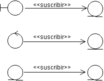
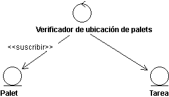
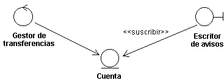
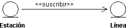
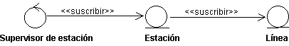

| Directriz: Asociación de suscripción |
 |
|
| Elementos relacionados |
|---|
ExplicaciónEn algunos casos, un objeto depende de que ocurra un suceso específico entro objeto. Si el suceso se produce en un límite u objeto de control, el objeto simplemente informa al otro objeto sobre lo que ha sucedido. Pero, si el suceso se lleva a cabo en un objeto de entidad, la situación es algo diferente. Un objeto de entidad no puede informar a otros objetos sobre algo si no se le solicita, específicamente, que lo haga. Ejemplo Suponga que se ha modelado un sistema con la posibilidad de retirar dinero de una cuenta bancaria a través de transferencias. Si un intento de retirada provoca un saldo negativo en la cuenta, se debe escribir y enviar inmediatamente un aviso al cliente. La cuenta, que se modela como un objeto de entidad, no se debe ver afectada con respecto a si se ha notificado al cliente o no. En su lugar, un objeto de límite debe notificar al cliente. En el ejemplo anterior, el objeto de límite debe plantear la pregunta "¿ha ocurrido el suceso que estoy esperando?" repetidas veces al objeto de entidad. Con el objeto de aclarar la situación, y posponer los detalles de implementación hasta la fase de diseño, existe una asociación especial que se utiliza para expresarlo, es decir, asociación de suscripciones. La asociación de suscripciones, que asocia un objeto de cualquier tipo a un objeto de entidad, expresa que se va informar al objeto de asociación cuando tenga lugar un suceso determinado en el objeto de entidad. Se recomienda utilizar la asociación sólo para asociar objetos de entidad, puesto que es la naturaleza pasiva de los objetos de entidad la que provoca la necesidad de la asociación. Por otra parte, los objetos de control e interfaz pueden iniciar la comunicación. Por este motivo, no necesitan estar "suscritos a", sino que puede llevar a cabo sus responsabilidades de otros modos.  La asociación de suscripción asocia un objeto de cualquier tipo a un objeto de entidad. Se informa al objeto de asociación cuando tiene lugar un suceso concreto en el objeto de entidad asociado. Tenga en cuenta que la dirección de la asociación muestra que sólo se informa al objeto de suscripción de la relación entre ambos objetos. La descripción de la suscripción está totalmente en el objeto de suscripción. A su vez, el objeto de entidad asociado se define del modo habitual sin tener en cuenta que otros objetos pueden estar interesados en su tarea, lo que también implica que se pueden añadir o eliminar un objeto de suscripción del modelo, sin cambiar el objeto al que suscribe. La asociación de suscripción tiene asignada una multiplicidad que indica cuántas instancia del objeto de destino se pueden asociar simultáneamente al objeto de asociación. A continuación, se describen una o más condiciones de la asociación, que indican lo que debe ocurrir para que se informe al objeto de asociación. El suceso puede ser un cambio en el valor del atributo o la asociación, o bien, (parte de) la evaluación de una operación. Cuando se produce el suceso, se informa al objeto de suscripción de que ha sucedido algo. Tenga en cuenta que no transmite ninguna información relacionada con el resultado del suceso, sólo el hecho de que ha sucedido el suceso. Si el objeto de asociación está interesado en el estado resultante del objeto de entidad después del suceso, debe interactuar con el objeto de entidad del modo habitual, lo que significa que también necesita un enlace. Ejemplo En el Sistema de manipulación de almacén, se debe realizar comprobaciones de área en los palets, para medir su esperanza de vida. Por este motivo, al mover cada centésimo de un palet de un lugar del almacén a otro, se comprueba el palet en una estación de prueba especial. Lo modela una asociación de suscripción de la clase de control Comprobador de área de palet a la clase de entidad Palet. Cada instancia de Palet cuenta el número de veces que se mueve utilizando un atributo de contador. Cuando se ha movido cien veces, se informa al Comprobador de área de palet debido a la condición de la asociación de suscripción. A continuación, el Comprobador de área de palet crea una Tarea especial, que transporta el palet a la estación de prueba. El Comprobador de área de palet no necesita ningún enlace al Palet, pero debe tener un a la Tarea con el objeto de iniciarla.  Una vez que se ha movido un palet cien veces, el Comprobador de área de palet crea una nueva Tarea. Las condiciones de la asociación de suscripción se deben expresar en términos de características abstractas, en lugar de en términos de sus operaciones o atributos específicos. De este modo, el objeto de asociación se mantiene independiente del contenido del objeto de entidad asociado, que es posible que cambie. La asociación de suscripción no siempre asocia dos instancias de objeto. También es válido de una clase a una instancia, una metarelación, descrita en las secciones siguientes. Hay dos casos en los que la clase de un objeto se asocia por medio de una asociación de suscripción, por ejemplo, si el suceso concreto se encuentra en la creación de instancias de la clase. UsoAsociaciones de suscripción de clases de límiteEn ocasiones, se debe informar al objeto de límite si un suceso se produce en un objeto de entidad. Se denomina asociación de suscripción. Ejemplo Considere una retirada de una cuenta bancaria por medio de transferencias. Aquí, es el objeto de control Manejador de transferencia el que lleva a cabo las operaciones en el objeto de entidad Cuenta. Si el saldo de la Cuenta se convierte en negativo, se envía al cliente un aviso que ha preparado el objeto de límite Escritor de avisos. Por consiguiente, este objeto tiene una asociación de suscripción con Cuenta. La condición establecida es que el saldo se sitúe por debajo de cero. Tan pronto como se produce el suceso, se informa al Escritor de avisos. Esta asociación de suscripción concreta es una asociación de instancia, por cuanto como instancia de Escritor de avisos está, constantemente, a la expectativa de sobregiros en las instancias de Cuenta. Si el cliente no debe recibir ninguna otra información más que la del saldo deficitario, es suficiente. Pero, si también se le debe indicar la cantidad del saldo, el Escritor de avisos debe realizar una operación en la Cuenta para informarse sobre el importe exacto. Para ello, el Escritor de avisos debe tener un enlace a Cuenta.  La clase de límite Escritor de avisos se suscribe al suceso del saldo deficitario situado por debajo de un nivel determinado en el objeto de entidad Cuenta. Si el Escritor de avisos también debe conocer la suma exacta del déficit, debe tener un enlace a la Cuenta. Un ejemplo de una meta asociación de una clase de límite es cuando un suceso de un objeto de entidad hace que se presente una nueva ventana al usuario. A continuación, una clase de objeto de interfaz se suscribe a instancias del objeto de entidad. Asociaciones de suscripción de clases de entidadEjemplo En un sistema que maneja una red hay estaciones que funcionan como nodos en la red y líneas que las interconectan. Cada estación se conectan a las demás estaciones a través de varias líneas. La capacidad de una estación se determina por el número de líneas que están funcionando. Si más del 80 % de ellas están en funcionamiento, la estación tiene una capacidad alta, si menos del 20 % están en funcionamiento su capacidad es baja, y cualquier nivel entre ambas es la capacidad media. En el modelo del sistema, hay dos objetos de entidad, Estación y Línea, donde Estación tiene una asociación de suscripción a Línea. La condición de la asociación es que se debe informar a la Estación cuando el estado de Línea, que se puede habilitar o inhabilitar, cambie. Además, se informa a un objeto de control que se suscribe a Estación si la capacidad de la estación baja, tal como se describe más abajo, donde continúa este ejemplo.  Tan pronto como cambia el estado de una de las instancias de Línea, se informa a la instancia Estación. Una asociación de suscripción entre clases de entidad es, casi siempre, una asociación de instancia, puesto que lo que implica, generalmente, son instancias ya existentes. No obstante, puede haber casos en los que una instancia del objeto de entidad de suscripción se cree cuando se produce el suceso especificado en el objeto de entidad asociado. En estos casos, la asociación va a una clase a una instancia, es decir, se trata de una meta asociación. También se puede suponer que una instancia de un objeto de entidad determinado debe conocer cuando se crea una nueva instancia de otro objeto de entidad. Asociaciones de suscripción de clases de controlEjemplo En el ejemplo anterior, el objeto de entidad Estación tiene una asociación de suscripción con el objeto de entidad d Línea. Por lo tanto, se informa a Estación cada vez que cambia el estado de una instancia Línea. Dicho cambio de estado también cambia la capacidad de la Estación. Si la capacidad baja, por ejemplo, menos del 20 % de sus líneas están en funcionamiento, el sistema debe buscar nuevos caminos adecuados a través de la red a fin de evitar esta estación. Obviamente, esto no es tarea de Estación, sino que lo debe realizar el objeto de control Supervisor de estación, que tiene una asociación de suscripción con cada instancia de Estación.  El objeto de control Supervisor de estación se suscribe al objeto de entidad Estación que, a su vez, se suscribe al objeto de entidad Línea. Con frecuencia, un asociación de suscripción de un objeto de control va a una clase a una instancia, o viceversa, es decir, una meta asociación. Por lo general, la instancia del objeto de control que va a tratar con el suceso del objeto de entidad no se crea hasta que se produce el suceso realmente. Pero también se puede suponer que, por ejemplo, una instancia de un objeto de control debe conocer cuando se crea una nueva instancia de un objeto de entidad concreto. Por esto, en algunos casos, la asociación de suscripción puede ser una asociación de instancia. Ejemplo En el ejemplo anterior, la asociación de suscripción del Supervisor de estación a la Estación tiene las características de una meta asociación, es decir, se informa a la clase Supervisor de estación cuando baja la capacidad de la estación. Cuando el Supervisor de estación recibe este mensaje, crea una instancia que trata el suceso. |
© Copyright IBM Corp. 1987, 2006. Reservados todos los derechos. |